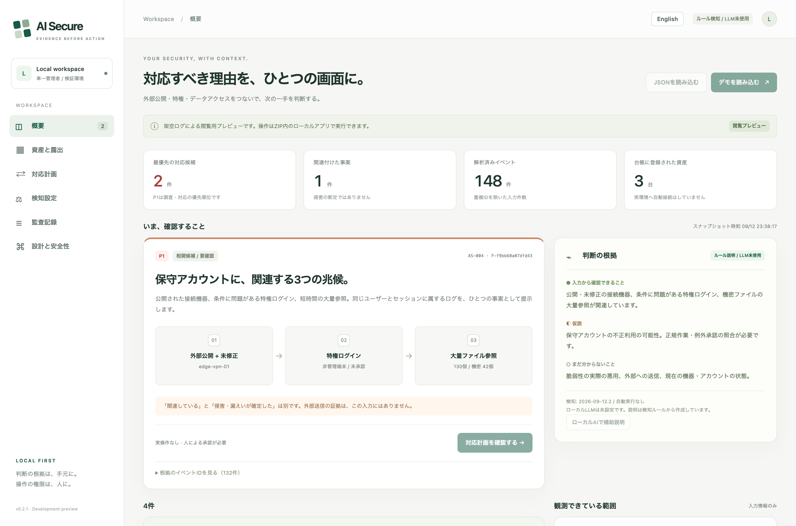

Evidence before action
点のアラートを、
調べられる一件に。
公開状態・特権ログイン・ファイル参照を関連づけ、根拠から調査を進める。自分の端末で使うセキュリティ分析の試作です。
検証用プロトタイプ · 合成データ · 監視・遮断なし
入力の観測を、時系列でたどる
合成データの相関結果です。実環境の監視・遮断は行いません。 実画面を開く →
約37秒のイントロです。クリックすると再生します。ナレーション版もあります。
一件の事案の構造
スコアではなく、読める一件。
同じ画面に、判断の材料がそろっています。何が重なったか、どこからが仮説か、その根拠、そして人に残された決定です。

3つの兆候を、1件に
露出した未修正のゲートウェイ → 条件を満たさない特権ログイン → 同じ利用者・セッションからの短時間の大量閲覧。積み上げではなく、関連づけです。
確定／仮説／不明
入力が確定させたこと、まだ仮説にすぎないこと、いまだ不明なことを分けて示します。ひとつの断定文に混ぜません。
イベントIDは、ワンクリック
各事案は、その根拠となるイベントを持ちます。「関連する」と「漏えいが確定した」は、別の主張として区別します。
勝手には動かない
対応計画はすべてシミュレーションで、理由と期限つきの明示的な承認が必要です。遮断・失効・停止を自動では行いません。
この製品が生まれた、一つの数字
「5分で100ファイル」——このルールは誰でも書ける。
でも、その代償を公開する人は、ほとんどいない。
そこで、自分たちのルールを測ってみました。対象は、合成データですが現実に近い正常業務 18.8日ぶん・85,509イベント—— 夜間バックアップ、分析担当の一括参照、移行作業、検索インデックス、週次のウイルススキャン、eDiscovery、バッチETL、そして私物端末からの承認済み保守です。
| ルール | 警告 | 検知 | 誤検知 |
|---|---|---|---|
| AS-003 — 大量ファイル参照ルール単体 | 103 | 1 | 102 |
| AS-004 — 公開機器 + 特権ログイン + 大量参照の相関 | 1 | 1 | 0 |
大量参照ルールが静かになるまで閾値を上げると、肝心の事案まで検知できなくなります。 閾値と時間窓を21通り試しましたが、誤検知がゼロになる設定は、どれも仕込んだ侵入を見逃しました。
この“非対称さ”こそが、この製品の主張のすべてです。 量そのものは手がかりになりません——バックアップと持ち出しは、同じ形に見えるからです。手がかりになるのは、経路です。
指標で言うと、合成データ約75日で AS-004（相関）は適合率1.00・F1 1.00・誤検知0件/日。単体の大量参照ルールは適合率0.003です。これは合成データの数値で、実環境の誤検知率ではありません。閾値を信じる前に、自分のログで測り直すための“予行演習”だと考えてください。 適合率・再現率・F1 → · シナリオ別の検知範囲 → · 測定手順・スイープ表
はじめる
pipも、APIキーも、クラウド契約もいりません。
必要なのは Python 3.11 以上だけ。起動するたびに新しいトークンを発行し、127.0.0.1 でだけ待ち受けます。
git clone https://github.com/FORIFOR/AISecure.git && cd AISecure python3 -m aisecure serve --demo # 自分のログを取り込む（読み取り専用。元のファイルには何も書き込みません） python3 -m aisecure import \ --source generic-auth-csv=auth.csv \ --source generic-file-access-jsonl=access.jsonl \ --out snapshot.json --quality quality.json # 正常業務で、閾値がどれだけ誤検知を出すかを測る python3 -m aisecure baseline --days 5 --users 40 --out normal.json python3 -m aisecure evaluate normal.json incident.json --sweep --out report.md
読むのは、許可した項目だけ
CSV・JSON Lines は、あらかじめ許可した項目しか読めないマッピング経由で取り込みます。
ファイル本文や認証情報を取り込む設定は作れません。読めなかった値は null（不明）のまま——勝手に false（なし）にはしません。
決定論的で、あとから調整できる
公開状況・特権への到達性・行動を組み合わせて優先度を決めます。閾値は設定として外に出し、 ハッシュ化して監査ログに記録するので、感度をこっそり下げることはできません。
決めるのは、人
各事案は「入力から確認できること」「仮説」「まだ分からないこと」を分けて示し、根拠のイベントIDを添え、 承認の前に業務への影響を提示します。
できないこと
できないことから、先に書く。
強みしか語らないセキュリティツールは、信頼するための材料が足りません。
- 監視はしません。 渡されたスナップショットを解析するだけで、常に動き続ける処理はありません。
- 遮断はしません。 対応計画はすべてシミュレーション。セッションを切る・通信を止める・アカウントを止めるコードはありません。
- 漏えいを断定しません。 「ファイルを見た」と「データが外に出た」は、別のこととして分けて表示します。
- LLMは何も決めません。 検知は決定論的なルールです。任意のローカルモデルは補足説明を書くだけで、ツールも生ログも渡さず、引用は表示前に必ず検証します。
- 「不明」を「安全」にしません。 読めなかった項目は「不明」として数え、無害だとは決めつけません。
公開前の自己点検で、取り込み処理に潜む「検知をすり抜けさせる」欠陥を4件見つけて直しました—— 機器名を選ぶだけで、別の資産の公開状態を上書きできてしまうものも含みます。第三者による監査ではありません。 検証レポート →
入力が壊れている・曖昧なとき
「どう動くか」より、「どう失敗するか」。
壊れた行、読めない値、判断のつかない事案に何をするか——それが分かって初めて信頼できます。ここでは、静かに自信ありげな誤答を返すのではなく、はっきりと、安全に失敗します。
破棄ではなく、理由つきでスキップ
解析できない行は件数を数え、品質レポートに理由を残します（rows_skipped / skip_reasons）。黙って捨てず、判断を変える値に化けさせません。
「不明」のまま。「安全」にしない
読めなかった項目は unknown として保持します。false でも、無害な既定値でもありません。不明が、こっそり安全になることはありません。
拒否する。落ちない・漏らさない
取り込み620ケース＋HTTP 200ケースのファズ：不正・敵対的な入力は宣言済みのエラーで拒否し、応答にトレースや内部パスを漏らしません。ファズで実際の欠陥（未来すぎる時刻がスナップショットを汚す）を発見し、修正済みです。
偽りの成功を出さない
「ファイルを見た」と「データが外に出た」は別の主張のまま。相関は相関として示し、証明できない侵害を確定として報告しません。
企業の判断は、ここで分かれます——「デモは動くか」ではなく「壊れたとき何をするか」。自己点検レポート →
画面
判断の根拠まで、ひとつの画面に残す。


画面は日本語・英語に完全対応。検知内容も、対応計画も、設定の説明も、まるごと言語が切り替わります。
現状
v0.2.1 — できることを、正直に書いたローカル版。
いま役立つこと
端から端まで追える検知ロジックを学ぶ。初動から承認までの流れを試す（画面は日本語・英語対応）。 そして、閾値を導入する前に、その誤検知コストを測る。
未実装
常時収集するコネクタ、KEV・ベンダー情報の照合、SSO・RBAC、保管時の暗号化、 独立した監査保管、実際の遮断——これらはまだありません。本番のセキュリティ製品ではありません。
段階でいうと：紹介・PoC可能（L1）——合成データ上でローカルに評価でき、ロジックも1行ずつ読めます。まだ有償PoC（L2）や本番（L3）ではありません：実ログでの検証、SSO/RBAC、保管時暗号化、独立した監査保管、第三者レビューが未了です。検証チェックリスト →
次の目標は、機能を増やすことではありません。ある組織の実際の認証・機器・ファイル参照ログを取り込み、 「何も起きていない期間」で誤検知率を測ること。それが次の一歩です。
2026年9月に公表された、ガバメントソリューションサービスへの不正アクセスをきっかけに作りました。 当初「中（Medium）」評価で、すでに公開されていた脆弱性が修正前に悪用され、保守アカウントが大量のファイルを参照した——CVSSの高い順に処理するやり方が、もっとも苦手とする事案です。 この製品はその事案の再現ではなく、同梱のデータはすべて合成です。 情報源 →
2つの使い方
自分で動かす。あるいは、自社ログで評価する。
OSSとして使う
サンプル事例を調べ、検知ロジックを端から端まで読み、自分のスナップショットでローカルに動かせます。MITで無料。Issue・プルリクを歓迎します。
自社の環境で評価する
認証・ゲートウェイ・ファイルアクセスのログ取り込みと、事案のない期間での誤検知測定を一緒に検討します。うかがうのはログの形式・対象システム・確かめたい課題を、非機密の範囲で。実ログや秘密は貼らないでください。
これは検証用プロトタイプで、評価は探索的な共同作業です（有料の常時監視サービスではありません）。すべてローカルで完結し、実ログをどこかにアップロードする必要はありません。